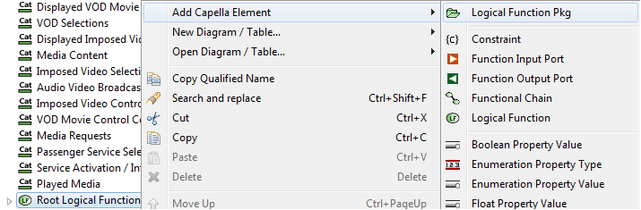

From a diagram, select a consistent set of elements (here, a Component and the Functions it is performing).
From the contextual menu, select “REC/RPL->Create REC->From selection...”

The REC creation dialog appears. A name shall be given to the REC. The Catalog field allows to select in which catalog this REC should be created. When working with Libraries, the Catalog is most likely located in a Library. In a library, an additional action “With whole library content...” is shown in the REC creation menu. If that action is chosen, the new REC will be initialized with the entire contents of the library.

The scope (content) of the REC is displayed. This dialog helps modifying this scope (for example adding or removing elements). By default, the tool applies a set of business rules to include elements (for example, allocations between Component and Functions, children of an element, Etc.). Note here that despite Functional Exchange “fe23” is carrying Exchange Items, these Exchange Items are not included by default in the REC. In most of the cases, they shoud not be, as references are kept.
It is possible at this stage to define which elements will have to be renamed when the REC will be instantiated (label [+SUFFIX]).
|
|
Set/Unset the Element as having to be renamed at Instantiation |
|
|
Include Selected Element |
|
|
Remove Element |
|
|
Generic Include Elements |
|
|
Include Related Elements |
|
|
Include Children Elements |
|
|
Include Required Dependencies of Selected Element |
|
|
Include All Requirement Dependencies |
The compliancy field allows defining how REC would be instantiated (is it possible to modify content of the replica? add external interfaces? add ports? add more functions?).
See the RPL Validation part for further description of any kind of compliancy (This feature is not fully available yet).
Notice the message at the bottom of the dialog, selected elements are linked to some elements which are not included in the REC (many exchange items, visible by clicking on the browse button on the right). When the REC will be instanciated, elements of the newly RPL will be linked to these exchange items too.

Close the dialog and check the result.
In the Project Explorer, the newly created REC appears. The Semantic Browser also show REC-related information:


And from the Function F2 included in the REC:

From anywhere in the model, use the contextual command “REC/RPL->Instantiate a RPL from a REC”:

The instantiation dialog opens:

This dialog allows:
All RPL elements corresponding to a REC element with the suffix tag [+SUFFIX] will have the RPL suffix.
The parent locator options exist to specify where the RPL elements will be located:

It is possible to create on-the-fly new elements in the right tree, using the contextual menu and rename them by pressing F2. It is possible to double click on a RPL element in the left tree to find its parent in the right tree.

Close the dialog.
The new RPL can be seen in the Project Explorer. The type of the RPL is displayed in brackets:

A good practice is to manage REC and RPLs in different folders:

On a diagram, insert the newly created elements (here, the Component and its Functions):

The Semantic Browser display RPL- and REC-related information:

The Semantic Browser also shows the Functional Exchange “fe2”, part of the RPL, is also carrying the Exchange Items EI1 and EI2, even though these two Exchange Items were not included in the REC:

It is now possible to use this RPL in the model. For example, by connecting it also to other elements:

On a diagram showing the source elements of the REC, select all elements and copy the layout:

This can also be achieved by selecting any source elements of the REC, right click on it "Capella Select > Related REC Elements > REC"

On a diagram where the RPL is displayed, paste the layout:

If multiple RPLs of the same REC are displayed, and you want to copy the REC layout to all RPLs, this can be achieved by pasting the layout on each RPL, one at a time. To do so, select a RPL element, right click "Capella Select > Related RPL Elements > RPL X" and paste the layout Do this for each RPL.

The layout is synchronized between the REC and the RPL: